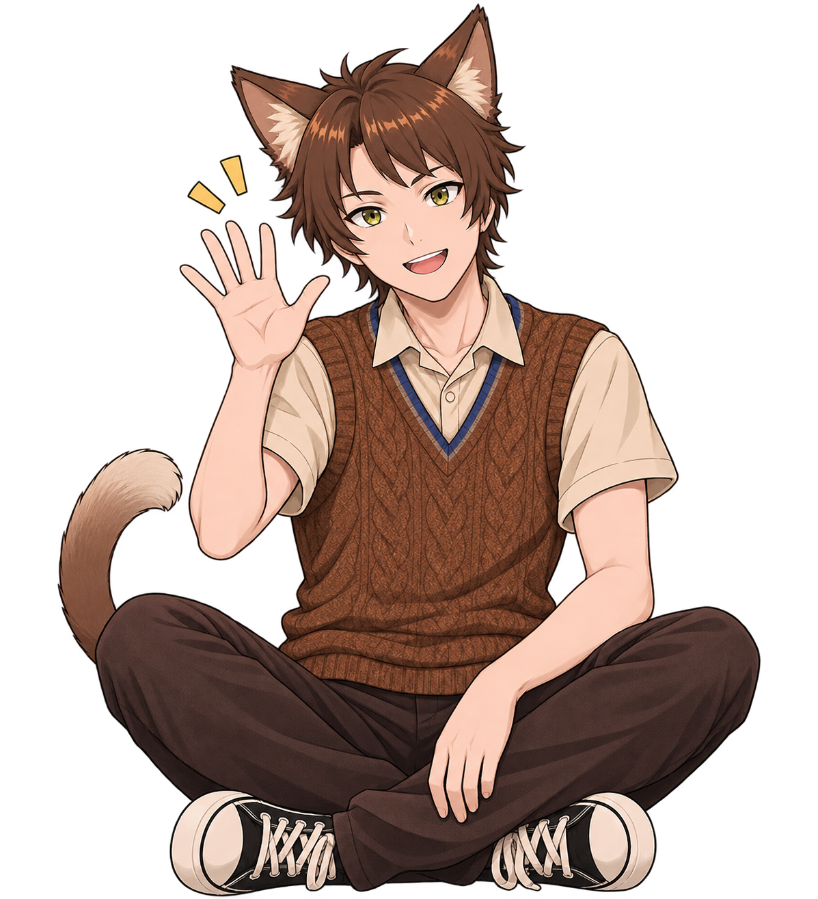

LE FOYER DE KATTSO
Varnac
Ville fictive · Belgique
Francophone · Europe occidentale
02 · Lore & fiche de personnage
Dans un monde contemporain où humains et hybrides cohabitent, Kattso avance à son rythme : entre Varnac, les jeux, la curiosité et les rencontres qu'il apprend à laisser entrer.
Découvrir son univers
Un quotidien proche du nôtre
Humains et hybrides vivent côte à côte depuis toujours. Les technologies, les habitudes et les préoccupations sont familières ; oreilles, queues, plumages ou sens développés font naturellement partie de la diversité de ses habitants.
Les préjugés existent, parfois discrètement, parfois plus ouvertement. Ils ne résument pourtant pas chaque rencontre. Ici, être différent n'empêche pas de mener une vie ordinaire.
Ville fictive · Belgique
Francophone · Europe occidentale
Les mines, la métallurgie et les grandes manufactures ont autrefois fait la prospérité de Varnac. Puis l'industrie a décliné, les emplois se sont raréfiés et certains quartiers ont perdu leur élan. Sa réputation s'est assombrie, mais elle ne raconte pas tout : sous les façades vieillissantes restent une culture populaire, des initiatives locales et un vrai esprit de solidarité. Varnac est parfois rude, jamais sans âme.
Né ailleurs, élevé ici
Et qui, avec le temps, est devenue son foyer.
Kattso y naît. Peu après, ses parents trouvent une opportunité professionnelle à Varnac et choisissent d'y déménager pour offrir à leur famille de meilleures perspectives.
Ses souvenirs, ses habitudes et ses premières expériences se construisent dans cette ville. Il en connaît les défauts comme les petits bonheurs que les visiteurs pressés ne voient pas toujours.
À 25 ans, il vit toujours à Varnac, chez ses parents. Il cherche sa voie et reste ouvert aux nouvelles directions, sans se forcer à suivre un parcours tout tracé.
Curieux de nature
Livres, sciences, histoires et jeux ont toujours nourri sa curiosité. Il aime comprendre comment les choses fonctionnent, essayer, résoudre des problèmes — parfois au point de vouloir avoir raison un peu trop vite.
Son esprit analytique l'emmène vers des sujets très différents. Avec le temps, il apprend que savoir beaucoup de choses ne signifie pas tout savoir — et que l'écoute compte aussi.
L'école lui apporte aussi des moqueries, des incompréhensions et des moments de solitude. Les jeux et les univers fictifs deviennent des endroits où souffler et être lui-même.
Les changements de direction, les déceptions et quelques choix difficiles lui font perdre ses repères. Il finit par avancer autrement : avec plus de recul, des limites mieux connues et une confiance accordée plus prudemment.
Un détour n'est pas forcément une impasse. Un choix raté ne résume pas la valeur d'une personne.
Kattso aujourd'hui
Il aime le calme, les longues sessions de jeu et les soirées qui s'étirent. Il a longtemps préféré observer le monde depuis son coin de confort ; il n'a pas cessé d'être casanier, mais il ne veut plus que sa tanière soit toujours silencieuse.
Derrière son sarcasme et son air nonchalant, il apprécie sincèrement partager ses passions, découvrir de nouvelles personnes et bâtir des relations qui durent. Il ne sera pas forcément le plus bavard de la pièce. Il est simplement prêt à faire un effort.
Il n'est pas nécessaire de savoir où l'on va pour continuer d'avancer.
Pas de royaume à sauver.
Pas de prophétie à réaliser.
Juste une place à trouver.
Kattso en quelques repères
Ses traits félins sont naturels dans son univers. Pas de pouvoirs cachés ni d'accessoires magiques : juste Kattso, dans une tenue qui lui ressemble.
Silhouette & visage
Une silhouette masculine et compacte, une allure de jeune adulte et des traits plutôt doux. Son teint clair a un sous-ton pêche, naturellement rosé.
À la lumière, ses iris révèlent de discrets reflets dorés et noisette près de la pupille.
Signes félins
Ses oreilles brunes ont l'intérieur plus clair. Sa queue, assortie à ses cheveux, s'éclaircit vers une pointe noisette et crème.
Ces caractéristiques font partie de la diversité ordinaire de Varnac. Elles ne lui donnent pas de capacités surnaturelles particulières.
Tenue de référence
Chemise crème à manches courtes, pull sans manches brun café en maille torsadée, liserés bleu roi, pantalon brun et baskets noires à semelles claires. Une tenue soignée et confortable, un peu académique, devenue sa silhouette emblématique.
Aucun accessoire permanent pour le moment.Ce qui l'occupe
Ses centres d'intérêt vont de la technologie aux univers imaginaires. Il aime autant comprendre un système que se laisser embarquer dans une histoire ou une partie entre amis.
Compétitif, jeu de rôle, aventure narrative, gestion ou stratégie : il aime la variété des expériences, les mécaniques à comprendre et les mondes à découvrir.
Informatique, matériel, logiciels, physique et chimie. Il aime expérimenter, résoudre un problème et bricoler des projets numériques.
Rock et metal, musique classique, électro des années 2000 — de la dance à la techno hardcore.
Son petit refuge familier.
Sa version préférée.
Deux grands favoris de la cuisine asiatique.
Son rythme de nuit : dort quand il peut, veille quand il ne devrait pas et carbure à la caféine.
L'histoire continue
Varnac, sa tanière, ses projets et les rencontres à venir : les nouveaux chapitres se construiront avec le temps. Kattso n'a pas besoin de devenir quelqu'un d'autre pour mériter son histoire.